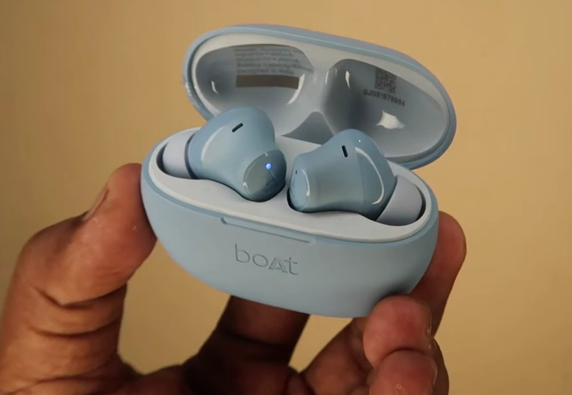
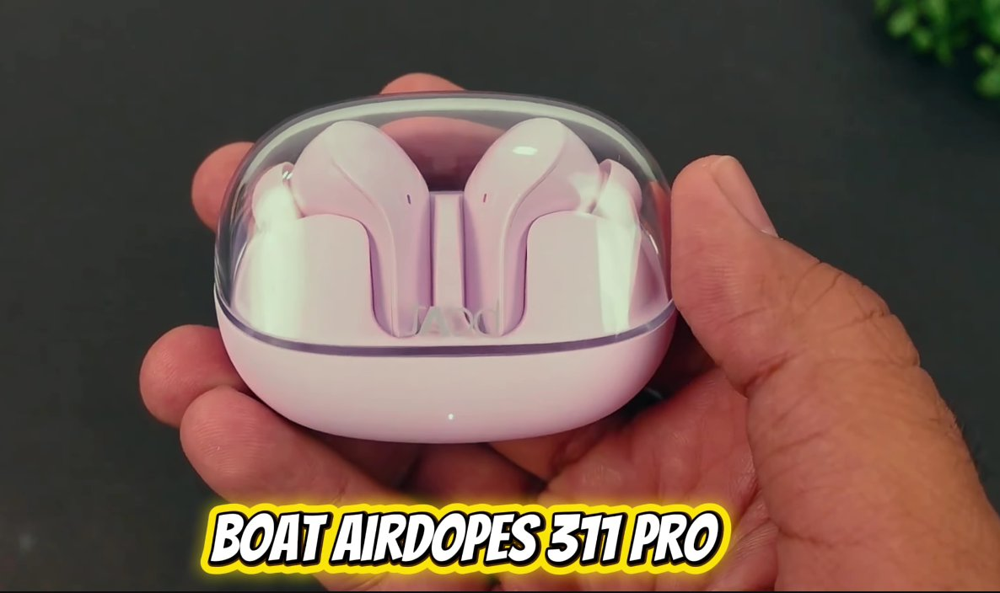

boAt Airdopes One Side Not Working: The Fixes That Actually Work
One earbud not working on boAt Airdopes is in most cases a pairing cache issue rather than hardware failure. The two buds lost their sync with each other. A factory reset of the buds — which clears the pairing memory on both simultaneously — reconnects them in under two minutes. Hardware failure is rare and usually only happens on buds with physical damage.
What Does “One Side Not Working” Actually Mean?
Unlike wired earphones where one dead side typically means a broken wire, truly wireless earbuds like the boAt Airdopes work differently — and that’s actually good news for you.
Each earbud is a tiny independent device with its own Bluetooth chip, battery, and firmware. The two earbuds communicate with each other wirelessly (a process called inter-earbud synchronization or the TWS sync protocol) to stay in lockstep. Your phone connects to the primary earbud (usually the right one), and that earbud relays audio to the secondary earbud.
When one side stops working or won’t sync, it usually means one of three things:
- The sync connection between the two earbuds has dropped. This is the most common cause. It happens after a firmware glitch, an incomplete charging cycle, or simply because one earbud was taken out of the case before the other.
- The earbud is still paired to a previous device — your old phone, a friend’s phone, or a tablet you connected to once — and it’s stubbornly trying to reconnect to that device instead of syncing with its partner.
- One earbud’s battery is too low to maintain a stable connection, causing it to drop out while the stronger earbud stays connected.

The blue LED on the earbud indicates pairing mode. If only one LED is blinking, the earbuds have lost their TWS sync with each other.
Tools You’ll Need
You genuinely don’t need a single physical tool for this fix. Here’s the full list:
- Your boAt Airdopes earbuds
- The charging case they came with
- Your phone (to unpair and re-pair via Bluetooth settings)
- A charging cable (in case the battery is low)
- About 10–15 minutes of your time
Step-by-Step Fixes (Ordered by Success Rate)
Go through these in order. Most users find their fix at Fix 1 or Fix 2. Only move to the next step if the previous one didn’t solve it.
This is the TWS equivalent of turning it off and on again — and it works surprisingly often.
- Place both earbuds back into the charging case.
- Close the lid and wait for 15–20 seconds.
- Open the lid. The earbuds should power on automatically and attempt to re-sync with each other before connecting to your phone.
- Take both earbuds out at the same time — don’t take out one and then the other. Removing them simultaneously gives them the best chance of syncing together properly.
- Put them in your ears and test audio on both sides.
Sometimes the problem isn’t the earbuds — it’s the stale Bluetooth pairing stored on your phone. Clearing it forces a clean, fresh connection.
- On your phone, go to Settings > Bluetooth.
- Find your boAt Airdopes in the list of paired devices.
- Tap the “i” icon (iPhone) or the gear/settings icon (Android) next to the device name.
- Select “Forget This Device” or “Unpair” and confirm.
- Place both earbuds back in the case, close the lid, wait 10 seconds, then open it.
- Both earbuds should power on and enter pairing mode automatically (you’ll usually see a flashing light).
- On your phone, scan for Bluetooth devices and select your boAt Airdopes from the list.
- Once connected, test both sides.
This step resolves the “one earbud connects but the other doesn’t” issue the majority of the time.
A significantly low battery in one earbud can cause it to drop out of sync while the stronger earbud stays connected. It looks exactly like a hardware failure but it isn’t.
- Place both earbuds in the charging case and leave them for at least 30 minutes.
- Check that the charging LEDs on the case are lighting up for both earbuds — if only one light shows, one earbud may not be making proper contact with the charging pins.
- If an earbud isn’t charging in the case, remove it, gently clean the charging contacts on the earbud and inside the case with a dry cotton swab, and replace it.
- Once both earbuds have charged, remove them together and test.
The reset steps vary slightly by model, but the most common method for boAt Airdopes is:
- Place both earbuds in the charging case and leave the lid open.
- Press and hold the button on both earbuds simultaneously for 10–15 seconds (some models have a single button; some have touch controls — press and hold the touch area).
- You should see the indicator lights flash red and white alternately, then both lights will turn off briefly. This confirms the reset.
- The earbuds will automatically restart and enter pairing mode, indicated by alternating flashing lights.
- On your phone, forget the device in your Bluetooth settings (see Fix 2, steps 1–4).
- Re-pair the earbuds fresh from your Bluetooth settings.
Model-specific reset methods:
- boAt Airdopes 141 / 161 / 171: Press and hold the multifunction button on both earbuds for 10 seconds until the LEDs flash red and white.
- boAt Airdopes 311 / 381 / 441: Place in open case, long-press both earbuds for 15 seconds until LEDs blink alternately.
- boAt Airdopes 500 / 700 series: Long press the touch panel on both earbuds simultaneously for 10 seconds.
If you’re unsure of your exact model, check the inside of the charging case lid — the model number is always printed there.

The boAt Airdopes 311 Pro in its transparent case. For this model, place in open case and long-press both earbuds for 15 seconds to factory reset.
- Inspect the speaker mesh on the silent earbud. Hold it under a light and look for any visible blockage.
- Using a dry, soft-bristled toothbrush, very gently brush the speaker mesh in circular motions to dislodge any debris.
- Use a dry cotton swab to clean the gold charging contacts on the bottom of each earbud and inside the charging case.
- If there’s visible earwax buildup on the silicone ear tips, remove the tips and rinse them with plain water. Dry completely before reattaching.
- Reassemble, place in the case to charge for 15 minutes, then test again.
Before concluding that the earbud itself is faulty, rule out your phone as the source of the problem.
- Perform a fresh factory reset (Fix 4) on the earbuds.
- Pair them with a completely different phone or tablet — a family member’s device works perfectly for this test.
- Test both sides on the new device.
If both sides work perfectly on the second device, the issue is with your phone’s Bluetooth stack, not the earbuds. Try turning your phone’s Bluetooth completely off and back on, or — as a last resort — reset your phone’s network settings (Settings > General > Reset > Reset Network Settings on iPhone; Settings > System > Reset Options > Reset Wi-Fi, mobile & Bluetooth on Android).
When to Contact boAt Support
boAt Airdopes are not designed to be repaired at a component level — there are no user-serviceable parts inside. However, there are clear situations where you should reach out to boAt directly:
- One earbud is completely unresponsive — no light when charging, no power when removed from the case, even after cleaning the contacts. This points to a dead battery or failed charging circuit.
- The silent earbud makes crackling, static, or distorted sounds rather than just being silent — this suggests a damaged speaker driver, not a pairing issue.
- The reset procedure fails — no light response, no reaction to the button hold — meaning the earbud’s firmware or hardware is unresponsive.
- Your earbuds are within the warranty period. boAt offers a standard 1-year warranty on Airdopes products. Don’t attempt further fixes that could void it.
boAt support contacts:
- Website: boat-lifestyle.com › Support
- Email: support@boat-lifestyle.com
- Phone: 1800-889-6688 (India toll-free)
Quick Recap
| Fix | Difficulty | Time Needed |
|---|---|---|
| Return to case, restart, remove together | Very Easy | 2 minutes |
| Forget device on phone and re-pair | Very Easy | 3 minutes |
| Charge both earbuds, clean contacts | Easy | 30 minutes |
| Factory reset the earbuds | Easy | 5 minutes |
| Clean speaker mesh and contacts | Easy | 5 minutes |
| Test on a different device | Easy | 5 minutes |
Frequently Asked Questions
When only one earbud produces sound after pairing, the most common reason is that the secondary earbud (usually the left one) has lost its TWS sync with the primary earbud. Your phone connects to the primary earbud first, and the primary then syncs the secondary. If the secondary earbud has stale pairing data or low battery, it can’t complete this handshake. Placing both earbuds back in the case together and removing them simultaneously resets this sync sequence. If that doesn’t work, a factory reset fully clears the sync data and allows both earbuds to re-establish their connection from scratch.
A successful factory reset is confirmed by a specific LED pattern: the indicator lights on both earbuds will flash red and white alternately for 2–3 seconds, then briefly turn off before the earbuds restart automatically in pairing mode (indicated by the standard alternating coloured flash pattern for your model). If you don’t see this light sequence — especially if the LEDs show no change at all — the reset hasn’t registered. Try holding both buttons again for a full 15 seconds this time, making sure to press both simultaneously from the start.
If the problem keeps returning, it in the majority of cases points to one of two things. First, a low or degraded battery in one earbud — if that earbud can’t hold a charge reliably, it will keep dropping its sync connection as soon as the battery dips below the threshold needed to maintain TWS communication. Second, a firmware glitch that keeps re-corrupting the sync data. For the battery issue, try leaving both earbuds in the case for a full charge cycle overnight. For firmware, check the boAt app (if your model supports it) or boAt’s website for a firmware update — a known sync bug may already have a patch available.
Yes, most boAt Airdopes models support single-earbud (Mono Mode) use. To use one earbud independently, remove only the desired earbud from the case (leave the other inside). The removed earbud will automatically power on and enter connection mode, indicated by alternating coloured LED flashes. Then turn on Bluetooth on your phone and pair to your Airdopes as normal. Note that volume control and track skipping may be limited in Mono Mode depending on your specific model. Always check your model’s manual for the exact behaviour.
No. Performing a factory reset on your boAt Airdopes using the built-in button sequence does not void your warranty in any way. The factory reset is an official user-level procedure described in boAt’s own user manuals and support documentation. It simply restores the device’s software to its original state — no physical disassembly is involved, and no internal components are modified. If your earbuds are within the 1-year warranty period and the problem persists after a factory reset, you are still fully entitled to a warranty claim for a free repair or replacement.
Three habits prevent almost all repeat sync issues. First, always remove both earbuds from the case at the same time — never take out one earbud, use it, then add the second mid-session. Second, keep the case charged above 20% at all times; if the case battery is too low, the earbuds may not complete a proper sync cycle when the lid is opened. Third, keep the charging contacts clean with a dry swab once a fortnight — dirty contacts cause incomplete charges that lead directly to battery imbalances and the sync drops that follow.